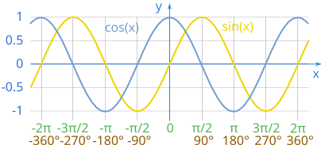
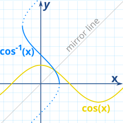
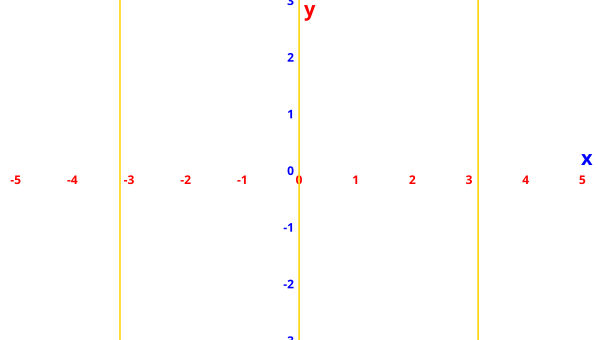
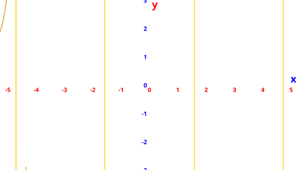
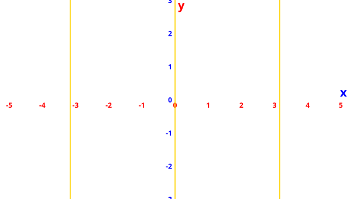

Graphs of Sine, Cosine and Tangent
A sine wave made by a circle:
A sine wave produced naturally by a bouncing spring:
Graph of Sine

The sine function has this beautiful up-down curve (which repeats every 2π radians, or 360°).
It starts at 0, heads up to 1 by π/2 radians (90°) and then heads down to −1.
Graph of Cosine

Cosine is just like sine, but it starts at 1 and heads down until π radians (180°) and then heads up again.
Graph of Sine and Cosine

In fact sine and cosine are like good friends: they follow each other, exactly π/2 radians (90°) apart.
Graph of the Tangent Function

The tangent function has a completely different shape:
- it goes between negative and positive infinity
- and crosses through y=0 at x=0 and every π radians (180°)
Halfway between those zero points (such as at π/2 radians (90°) the function is officially undefined.
Why undefined? because it could be positive infinity or negative infinity!
Inverse Sine, Cosine and Tangent
The Inverse Sine, Cosine and Tangent graphs are:

Inverse Sine

Inverse Cosine

Inverse Tangent
Mirror Images
Here's cosine and inverse cosine plotted on the same graph:

Cosine and Inverse Cosine
They are mirror images (about the diagonal)!
The same is true for sine and inverse sine and for tangent and inverse tangent.
Cosecant, Secant, and Cotangent
They are not used as often as sin, cos and tan, but are worth knowing about.
The vertical lines are asymptotes: the function is undefined there because of 1/0.

csc() = 1sin()

sec() = 1cos()

cot() = 1tan()